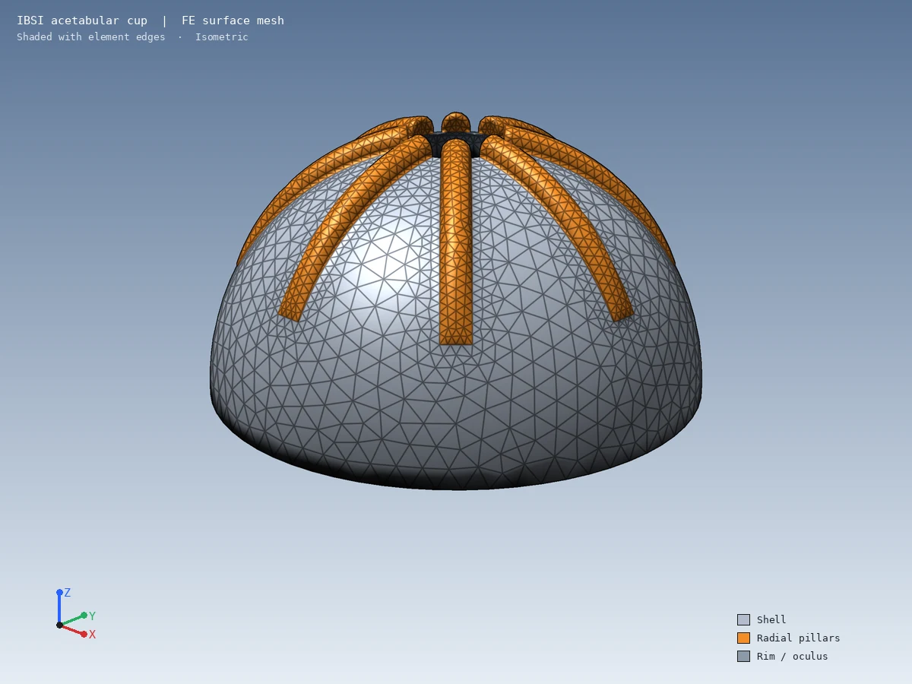
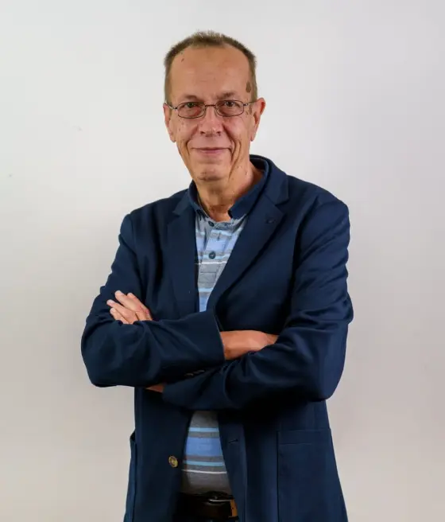

Medico ortopedico · Albo n. 16009
Progettazione protesidell'anca
Protesi innovative per una vita migliore.
Dopo anni di esperienza maturata sul campo in diverse nazioni europee, ho sviluppato competenze avanzate nella progettazione e realizzazione di protesi personalizzate, lavorando a stretto contatto con professionisti del settore e persone che desiderano ritrovare comfort, autonomia e qualità della vita. Questo percorso internazionale mi ha permesso di acquisire una visione moderna e completa delle tecnologie e metodologie più innovative applicate al mondo protesico.
Oggi porto questa esperienza in Italia, offrendo soluzioni altamente specializzate, progettate con cura dei dettagli e massima attenzione alle reali esigenze di ogni individuo. Ogni protesi è studiata per garantire funzionalità, comfort, affidabilità ed estetica, con l'obiettivo di migliorare concretamente la vita quotidiana.
L'unione tra competenze tecniche, innovazione e approccio umano consente di creare dispositivi su misura, capaci di adattarsi alle differenti necessità cliniche e personali. Dalla consulenza iniziale alla realizzazione finale, ogni fase viene seguita con la massima professionalità, garantendo un servizio di elevata qualità e soluzioni pensate per durare nel tempo.
In qualità di Amministratore Delegato di IBS Implant Company srls, me ne occupo in prima persona: la nostra azienda progetta e sviluppa protesi d'anca innovative, sottoposte a rigorosi test biomeccanici. A differenza delle protesi tradizionali presenti sul mercato, le nostre soluzioni garantiscono una distensione periferica progressiva verso il bordo del cotile compresa tra i 25 e i 30 micron sotto carico (fino al prototipo finale). Questa elasticità di 25-30 micron è fisiologica e assicura un'osteointegrazione ottimale senza l'interposizione di tessuto fibroso, garantendo al contempo un press-fit eccellente.
Consulenza Protesi dell'Anca
Il servizio di consulenza per la progettazione di protesi d'anca è orientato allo sviluppo di soluzioni avanzate e personalizzate, concepite per ridurre l'impatto chirurgico sul paziente e migliorarne significativamente la qualità della vita post-operatoria. Ogni progetto viene sviluppato con estrema attenzione agli aspetti anatomici e funzionali, al fine di ottenere una protesi in grado di integrarsi in modo naturale con la struttura ossea dell'ospite.
L'obiettivo primario è replicare la forma e la funzionalità dell'anatomia originale, garantendo comfort, stabilità e mobilità attraverso soluzioni di elevata precisione e affidabilità, modellate sulle specifiche esigenze di ogni persona.
Un'attenzione particolare viene dedicata alla fase di studio e simulazione biomeccanica, fondamentale per ottimizzare le prestazioni del dispositivo prima della produzione finale e per favorire un recupero funzionale più rapido ed efficace.

La progettazione si avvale della prestigiosa collaborazione con il Dr. Ulrich Hindenlang di LASSO Ingenieurgesellschaft mbH, integrando competenze ingegneristiche, esperienza clinica e tecnologie di punta per offrire standard qualitativi d'eccellenza.
Inoltre, abbiamo siglato una nuova e strategica collaborazione con l'HLRS (High Performance Computing Center Stuttgart), affiancati dal Dr. Ing. Ralf Schneider e dal Dr. Ing. Yusuf Akter, per la modellazione e la realizzazione dei disegni dei prototipi di ultima generazione.
Servizi
Il mio servizio di consulenza e progettazione di protesi dell'anca si distingue per un'esperienza mirata a creare dispositivi che garantiscano il massimo comfort e funzionalità per ogni paziente. Grazie agli anni di esperienza acquisiti, sono in grado di analizzare con attenzione le esigenze individuali e sviluppare soluzioni innovative, valide e altamente funzionali.
Consulenza per la realizzazione Protesi dell'Anca
Grazie agli anni di esperienza acquisiti, sono in grado di analizzare con attenzione le esigenze individuali e sviluppare soluzioni innovative, valide e altamente funzionali.
Progettazione di protesi innovative
L'Italia, con la sua lunga tradizione di eccellenza e innovazione nel settore medico, rappresenta il contesto ideale per la mia attività.
Qualità della vita
La mia missione è migliorare la qualità della vita dei pazienti affetti da patologie come artrosi e fratture del collo del femore, attraverso soluzioni protesiche all'avanguardia.

Iscrizione Albo Medici n. 16009
Chi sono
Dopo anni di esperienza maturata in diverse nazioni europee dove ho progettato e fatto realizzare protesi d'anca che hanno ottenuto ottimi risultati, sono giunto in Italia. L'Italia, con la sua lunga tradizione di eccellenza e innovazione nel settore medico, rappresenta il contesto ideale per la mia attività. La mia missione è migliorare la qualità della vita dei pazienti affetti da patologie come artrosi e fratture del collo del femore, attraverso soluzioni protesiche all'avanguardia.
«La protesi non è solo un impianto: è un progetto che deve dialogare con anatomia, stile di vita e aspettative.»
— Dr. Peter Copf —
Contatti
Via Enrico Toti, 2
Bucine
Per urgenze mediche rivolgersi al pronto soccorso o al proprio medico curante.